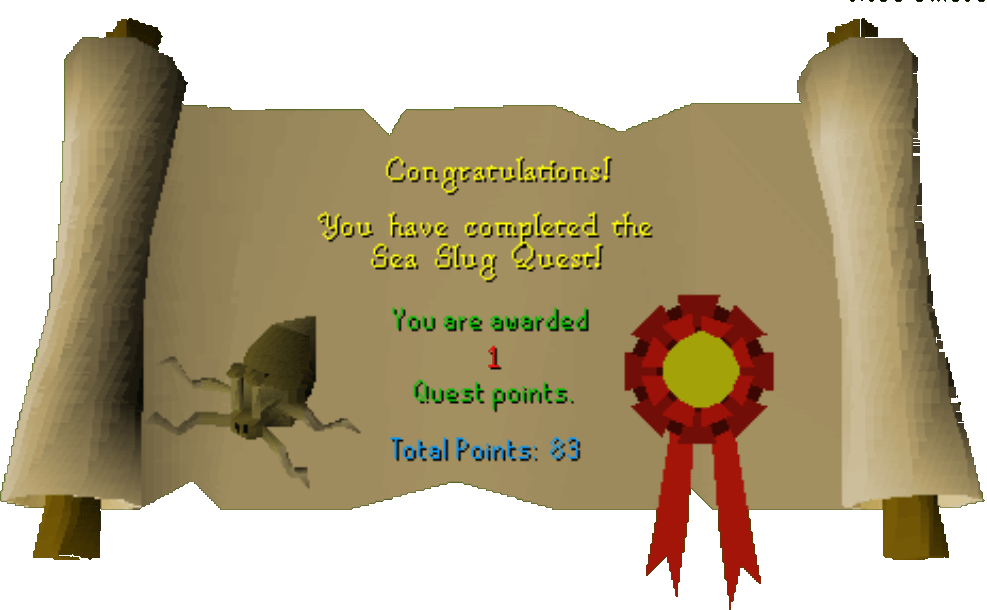

Sea Slug Quest
Description: Something strange is happening on the fishing platform. Missing fishermen and the presence of dozens of strange sea creatures gives cause for concern. Investigate the platform, discover the truth before it's too late.Difficulty: Intermediate
Length: Short
Items & Skills Needed:
- 30 Firemaking
Reward: 1 Quest point, 7,175 Fishing XP, Oyster Pearls, access to the Fishing Platform
Instructions:
Talk to Caroline, she'll tell you of her plight. She tells you that her friend Holgart can take you to the platform.
Talk to Holgart and find out his rowboat isn't seaworthy. He needs swamp paste to fix it, so give him some and you'll soon be at the fishing platform.
Walk west and talk to Bailey. He will tell you about his son, Kennith, who is hiding upstairs, and Kent, who left to find help days ago.
Go upstairs using the ladder on the northeast part of the platform, then head west to the building to talk to Kennith about the situation. Shout across the crates to him, then go find Kent by talking to Holgart.
You arrive on a small island, talk to Kent, and learn the history of what happened five days ago. Kent saves you from a sea slug's control. You thank him and return to the platform via Holgart to save Kennith.
Upon arriving, the fishermen won't let you up the ladder, so talk to Bailey to learn the weakness of the slugs: heat. He gives you a torch, but you have to light it yourself. Get the broken glass from the corner, and pick up some damp sticks from the northeast section.
Use your glass with the damp sticks to get dry sticks. Rub them together, and your torch should light. Climb up the ladder with your torch.
Talk to Kennith, then kick the loose panels on the outside of the building he's in. Talk to him again, and then rotate the crane. He'll jump on and into the rowboat below.
Go back to Holgart and return to land. Talk to Caroline to claim your reward.
Congratulations, Quest Complete!

This quest guide was written by Gnat88, warfangmage, and super_dude. Thanks to Weezy and DRAVAN for corrections.
This quest guide was entered into the database on Tue, Mar 02, 2004, at 09:30:16 PM by Wiz-Master and CJH and was last updated on Mon, Aug 02, 2004, at 08:37:38 AM.